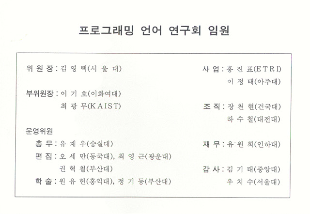
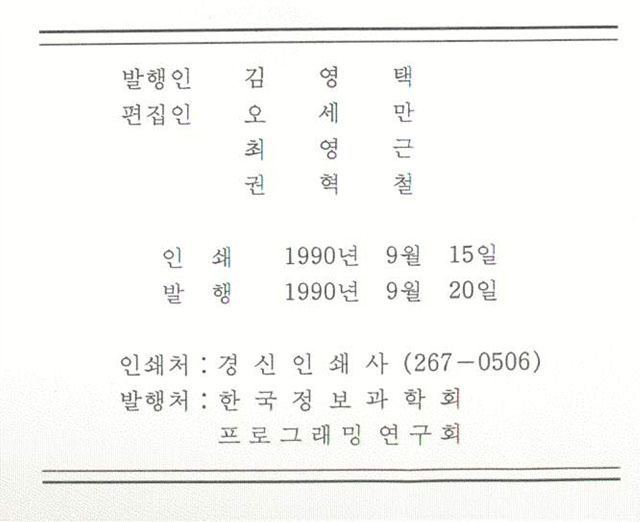

프로그래밍언어연구회지 제4권 제1호 (1990년 9월)
권두언:
오세만, 최영근, 권혁철
프로젝트 소개
통신규격 기술 언어의 적합성 검증 시스템: Estelle 언어를 중심으로
연구책임자: 원유헌 (홍익대학교), 연구원: 인소란 (ETRI), 곽영, 연구기간: 1990.4~1991.3
새로운 프로그래밍 언어소개
C++
하수철 (대전대학교)
Parallel C
오세만 (동국대학교)
경과보고


프로그래밍언어 연구회